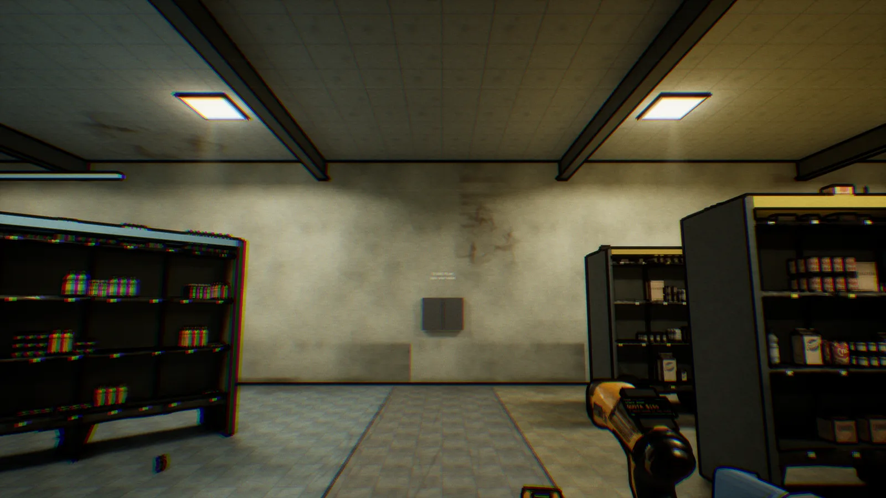
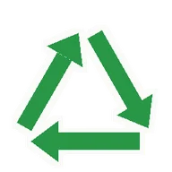
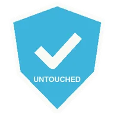
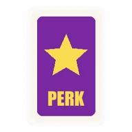
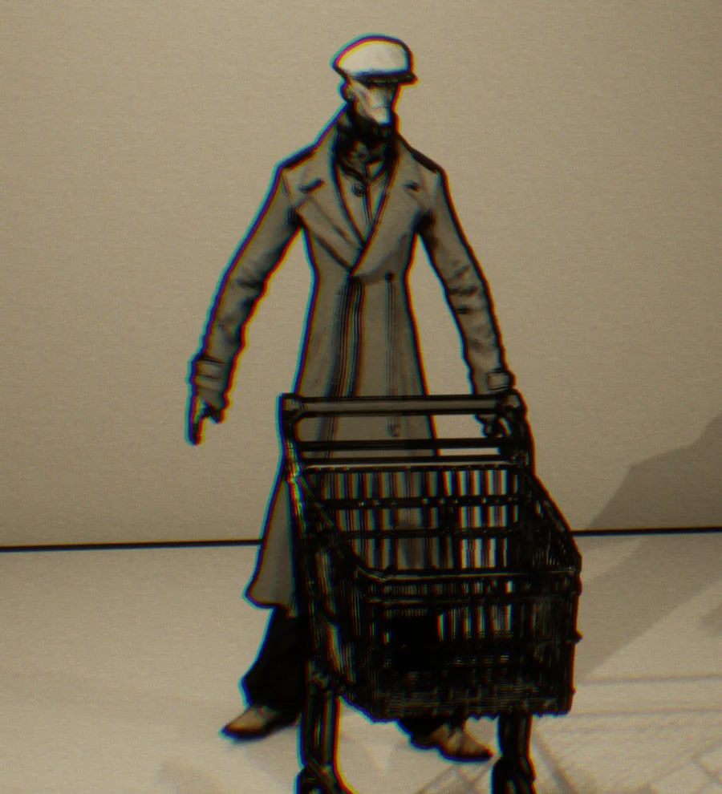
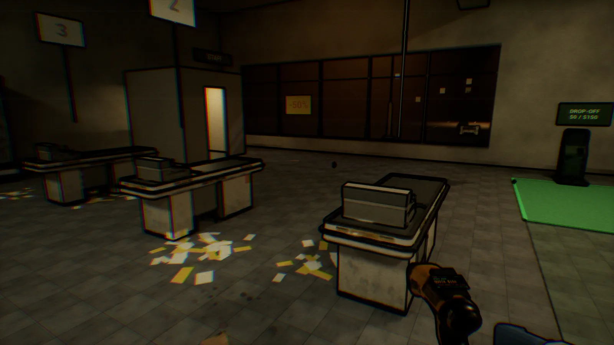

NIGHT
STOCKTAKE
Hasta cuatro trabajadores nocturnos. Una cuota. Un hipermercado que se reorganiza en cuanto nadie mira, y cosas en las estanterías que te devuelven la mirada.
El tráiler

El turno

Pasa tu credencial
Compra tarjetas de cliente, decora tu casillero y marquen entrada juntos. La sala de personal es el único lugar seguro del edificio.

Escanea, carga, entrega
Escanea mercancía, empuja carritos, carga un refrigerador con un amigo. Cada artículo que llega a la terminal cuenta para la cuota.

Sal a las seis
Cumple la cuota y marca la salida antes de que la tienda tenga hambre. Fállala dos veces y despiden a todo el equipo.

Características
 La tienda se mueveLas luces parpadean, las estanterías se reorganizan, secciones enteras cambian de lugar, pero solo mientras nadie las mira.
La tienda se mueveLas luces parpadean, las estanterías se reorganizan, secciones enteras cambian de lugar, pero solo mientras nadie las mira. Física realCarritos tambaleantes, mercancía que se cae, un refrigerador que necesita dos personas, y una de ellas lo guía a ciegas.
Física realCarritos tambaleantes, mercancía que se cae, un refrigerador que necesita dos personas, y una de ellas lo guía a ciegas. Seis amenazasCada una caza por el ruido a su manera. Despiertan una a una a medida que avanza la noche.
Seis amenazasCada una caza por el ruido a su manera. Despiertan una a una a medida que avanza la noche.
Un plano que mienteEl mapa de tu tableta es una instantánea. Cuanto más confías en él, más se equivoca. 85 stickersLos logros son stickers para tu credencial y tu cabeza de caja, de comunes a LEGEN...DARIOS.
85 stickersLos logros son stickers para tu credencial y tu cabeza de caja, de comunes a LEGEN...DARIOS.
Sé una cajaCambia de cabeza (una torre de pizzas, una tele vieja, un cubo de palomitas), sombreros, calzado, caras y skins de escáner.
Pagado por precisiónTu sueldo depende de un recuento honesto. Cambia la etiqueta de un precio y la tienda lo sabrá. Tu casilleroPíntalo, pégale cosas y deja que tu equipo eche un vistazo a tu álbum de stickers.
Tu casilleroPíntalo, pégale cosas y deja que tu equipo eche un vistazo a tu álbum de stickers.No interactuar
Seis cosas trabajan contigo en el turno de noche. Aprende qué oye cada una y qué la detiene.





Capturas




Transmítelo. Monetízalo.
- Puedes transmitir, grabar y monetizar videos de Night Stocktake en cualquier plataforma.
- No necesitas permiso; agradecemos un enlace al juego en tu descripción.
- La música y los sonidos propios del juego no están registrados en Content ID.
- El arte principal, los logos, las capturas y una ficha técnica están en el kit de prensa.
DIRECCIÓN DE LA TIENDA
Preguntas frecuentes
¿Cuántos jugadores?
De 1 a 4 en cooperativo en línea. Se puede jugar solo, pero cargar un refrigerador sin ayuda es lento y ruidoso.
¿Plataformas y fecha de lanzamiento?
PC (Steam). La fecha de lanzamiento y el precio se anunciarán en Steam y en nuestro Discord; añádelo a tu lista de deseados para enterarte.
¿Hay chat de voz?
Está previsto chat de voz por proximidad para el lanzamiento en Steam. Hasta entonces, usa tu app de voz favorita.
¿Cuánto miedo da?
Más angustia que sangre: luces que parpadean, cosas que se mueven cuando apartas la vista, ruidos fuertes repentinos. El juego incluye un aviso de fotosensibilidad y opciones para reducir el parpadeo.
¿Puedo transmitirlo?
Sí, y puedes monetizarlo. Consulta la política para creadores.
¿Idiomas?
Inglés, chino simplificado, ruso, portugués de Brasil, español y alemán: menús, HUD y subtítulos.
Únete al equipo nocturno
Noticias, pruebas de juego, reportes de bugs y los álbumes de stickers de otros jugadores.
0 en línea en nuestro Discord ahora